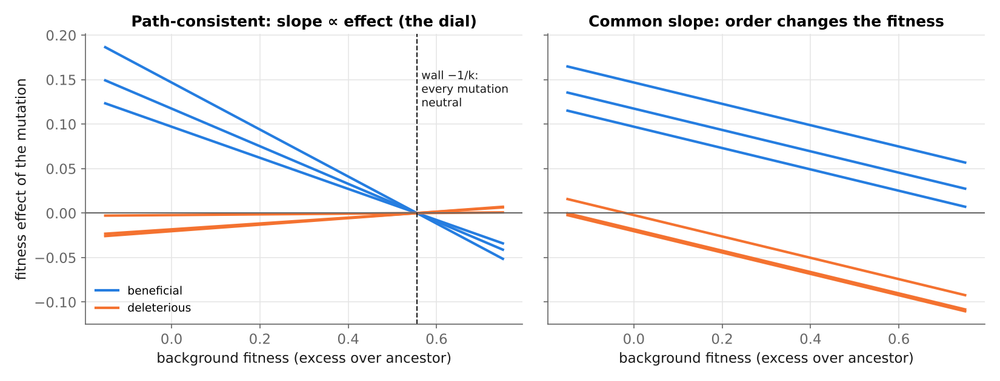

Biology series · 8 of 11
Selection multiplies an allele's odds by 1 + s, so selective stages compose by ∘₁ and generations by mpow, and the two standard 'no epistasis' nulls are dial 0 and dial 1. The new piece is about global epistasis, the observation that a mutation's fitness effect falls off roughly linearly with the fitness of the background it lands on. A linear rule like that gives the same genotype the same fitness whatever order the mutations arrive in only if every mutation's slope is a fixed multiple k of its effect. That is the dial, and it puts a wall at background fitness −1/k where every mutation is neutral at once.

Known or new. Selection on odds, multiplicative versus additive nulls, the Haldane–Muller load and the 'or' law for load are textbook population genetics. Global epistasis has been measured in E. coli (Khan et al. 2011), Methylobacterium (Chou et al. 2011) and yeast (Kryazhimskiy et al. 2014; Johnson et al. 2019), and Reddy and Desai (2021) explained it as a statistical pattern that emerges from many idiosyncratic interactions. The observation that the dial is multiplicative fitness measured from a shifted zero, 1 + k·x, is a version of the known point that epistasis depends on the fitness scale. I have not seen the path-consistency constraint stated in this form, but I did not search the literature closely and it may be known.
Is there a lead worth following? Modest, and noted rather than followed. The theorem is clean: a strictly linear, order-consistent rule must have slope/intercept equal for every mutation. That gives a direct test on any complete combinatorial landscape, such as Khan's 32 genotypes. I could not run it, because the Dryad copy of that data would not download here. Johnson et al. already report that deleterious mutations get worse in fitter backgrounds while beneficial ones get smaller. One dial cannot do both, so global epistasis is not an exact dial law across all mutations, which fits the view that it is statistical. The test would say how close to a dial the beneficial mutations alone come. That is worth one afternoon with the data, not a research direction.
A haploid allele at frequency p with selective advantage s goes to p(1 + s)/(1 + sp) in one generation, which multiplies its odds p/(1 − p) by 1 + s. So two selective stages, such as survival then fecundity, act as one stage with
and t generations of constant selection are one step with st = mpow(s, t); at s = 0.15, forty generations multiply the odds by 268. Against two mutations, the additive null s₁ + s₂ is dial 0, the multiplicative null s₁ ∘₁ s₂ is dial 1, and epistasis measured against the multiplicative null is (k − 1)·s₁s₂.
Many experiments find that a mutation's fitness effect on a background of excess fitness x (over the ancestor) is close to a straight line, Δj(x) = aj + cjx. Add mutation i and then j, or j and then i: the two results differ by exactly cjai − ciaj. One genotype must have one fitness, so an exact rule needs cj/aj to be the same number k for every mutation. Then adding a mutation is
The dial is associative and commutative, so any set of mutations in any order reaches one fitness (checked over random orders of six, proved in Lean). Three things follow:
A single common slope for every mutation, which is roughly what Johnson et al. saw for insertion mutations in yeast, fails this test: in the simulation the same genotype's fitness differed by 0.02 depending on order. So that pattern can hold only as a statistical tendency, which is how Reddy and Desai explain it.
Mutation load at many loci combines by the 'or' law: n loci of load U/n give wpow(−1, U/n, n), which tends to Haldane and Muller's 1 − e−U (0.39 at U = 0.5). A diploid's homozygous effect is the dial-sum of its two heterozygous copies, s = (hs) ∘k (hs) with k = (1 − 2h)/(h²s), and additive dominance h = ½ is dial 0. Both are bookkeeping.
| Place | What the circle operation does there | Known since | Verdict |
|---|---|---|---|
| Selection on odds | Stages compose by ∘₁, generations by mpow | Textbook | Exact, known |
| Epistasis nulls | Additive = dial 0, multiplicative = dial 1; ε = (k − 1)s₁s₂ | Textbook | Exact, known |
| Linear global epistasis | Order-consistent only if slope = k·effect: the dial, with a common wall −1/k | Khan 2011; Kryazhimskiy 2014; Johnson 2019 | Exact theorem; untested on data |
| Mutation load | 'Or' law; wpow(−1) → 1 − e^(−U) | Haldane 1937; Muller 1950 | Exact, known |
| Dominance | Homozygote = dial-sum of two copies | Textbook | Relabelling only |
File biology/08-evolution/lean/Evolution.lean, core Lean 4.37 with no mathlib, built on the shared library's base and using ∘₁ for the circle operation. Every theorem uses only Lean's standard axioms. It goes into the shared proof library as FusedAlgebra/Topics/Biology/Evolution.lean.
add_is_dial, additive_dominance, common_slope_gap, consistent_forces_dial, epistasis, from_the_wall, generations, generations_add, load, mult_null, order_gap, path_consistent_iff, proportional_consistent, stages, star_def, three_mutations, wall_at, wall_neutral
Numeric checks: 13 of 13 pass, from checks.py beside this page.
All numbers on this page come from simulation; I used no measured fitness data. Johnson et al.'s finding is taken from their abstract as returned by a web search; I did not read the paper. The Kryazhimskiy, Reddy–Desai and Chou references and the Haldane and Muller dates are from memory.